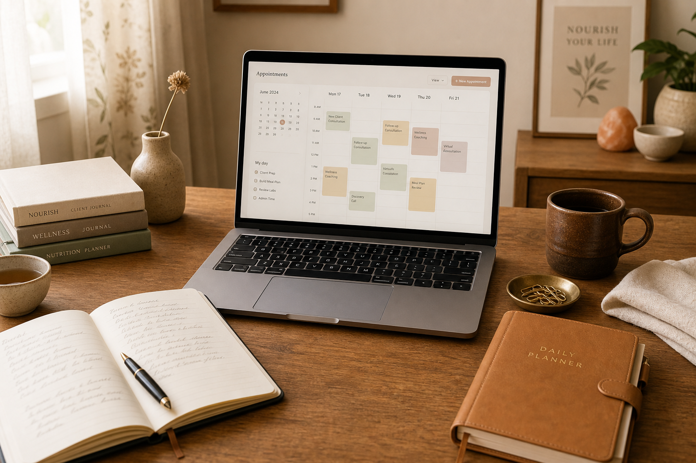
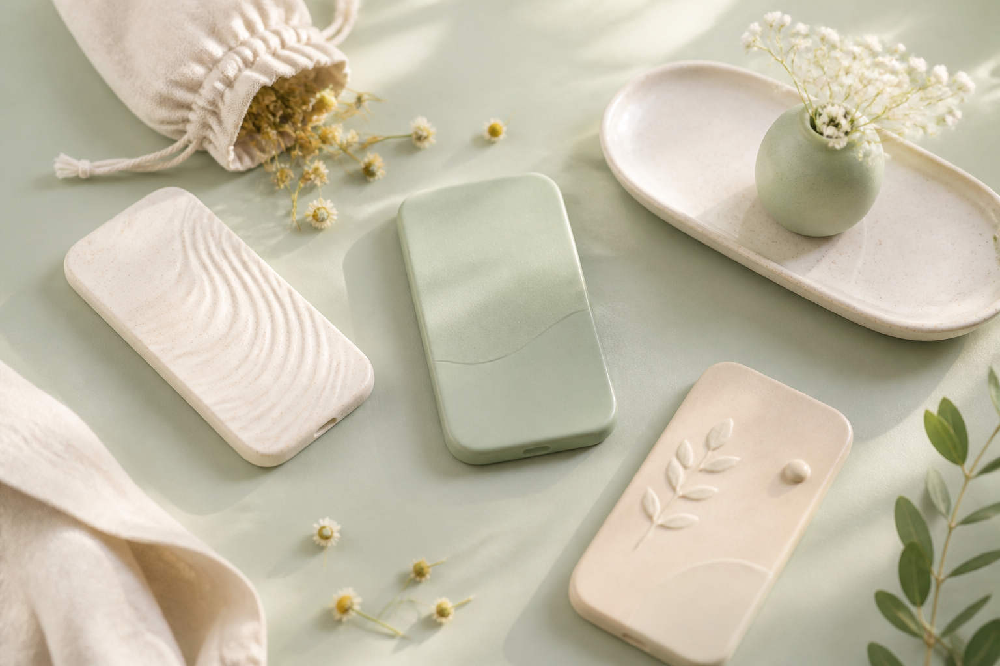
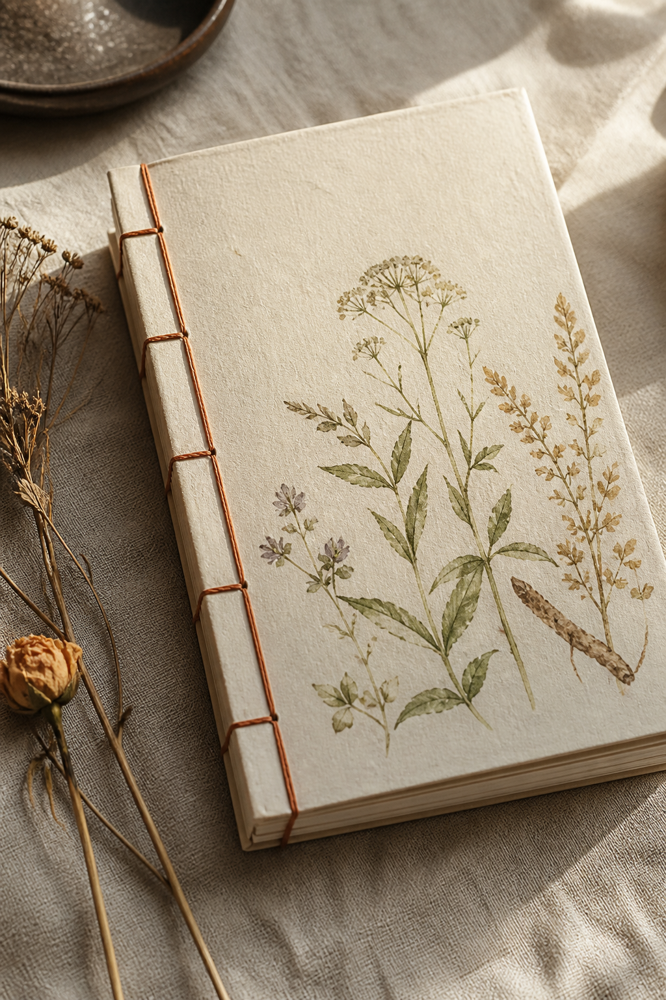
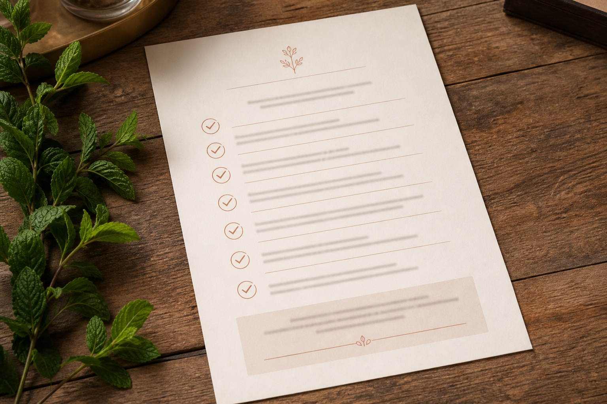
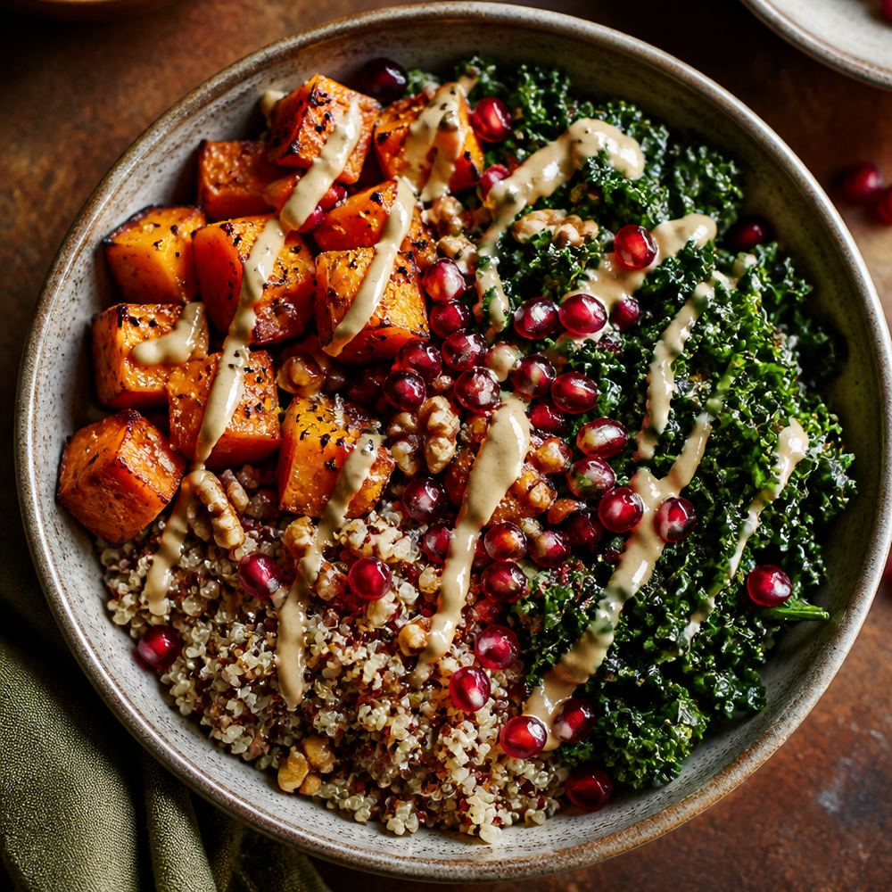

01
Возвращаю время
Чтобы вы не тратили вечера на вёрстку гайдов и ручной учёт оплат, а вели больше людей к здоровью.
Обо мне
Приветствую, меня зовут Ксения.
Когда я начинала как специалист по здоровому питанию, много сил уходило не на людей, а на таблицы, оформление, создание своего публичного пространства.
Поэтому я освоила цифровые инструменты и теперь создаю для коллег то, чего не хватало самой: удобные сервисы, сайты, ботов и материалы на языке вашей профессии.

Чтобы вы не тратили вечера на вёрстку гайдов и ручной учёт оплат, а вели больше людей к здоровью.
Понимаю, где практика теряет силы: хаос в чатах, учёт «на коленке», онлайн-лицо, которое не отражает вас.
Я сама из сферы здоровья, поэтому нам проще говорить на одном языке.
что можно сделать вместе
Ниже маленькие рабочие демо: пролистайте лендинги, пройдите квиз, управляйте CRM и ботом.
01 · приложение
Два характера: игра «Витаминки» для ребёнка и родителя и спокойный 21-дневный ритм. Оба заканчиваются тёплым приглашением на консультацию.
Игра для ребёнка и родителя: квиз про витамины и мягкий призыв к консультации.
Тихое сопровождение: один ритуал в день, без калорийного стыда и «срывов».

Сегодня: тёплая тарелка до 21:00
Не идеально. Достаточно. Отметьте, если получилось хотя бы на 70%.
02 · сайт
Тихий экспертный лендинг.
Школа как продукт: модули, энергия, набор потока.
Прокрутите каждое окно — внутри по 3 экрана.
нутрициолог · женское здоровье
Тихая сила: циклы, энергия, еда без войны с собой.
Не универсальный «рацион на 1500». Сначала слушаю историю тела, потом собираю опоры: завтрак, сон, нервная система.
Если вы устали от жёстких схем и хотите, чтобы питание снова стало про жизнь, а не про контроль — это пространство для вас.
Лендинг специалиста: воздух, лицо бренда, маршрут доверия.
онлайн-школа
Для тех, кто уже всё читал и всё равно путается в магазине.
Программа потока
Урок 12 мин. Дальше — список закупки и разбор в эфире раз в поток.
Сайт школы: каталог потока, программа списком и кабинет с уроками.
03 · учёт
Мини-CRM: карточки клиентов, статусы ведения, оплаты. В полной версии — любые ваши поля.
Переключайте разделы слева.
| Клиент | Запрос | Статус | След. сессия |
|---|---|---|---|
| Анна К. | Энергия, железо | сопровождение | 26 авг |
| Игорь П. | Питание при спорте | знакомство | 27 авг |
| Ольга М. | ПМС и тяга к сладкому | сопровождение | 29 авг |
| Дарья С. | После курса школы | пауза оплаты | — |
11:00 — Анна К., разбор анализов
14:30 — свободный слот (можно отдать боту)
18:00 — Игорь П., коррекция рациона
Напоминания уходят из этой же карточки в любой удобный для вас мессенджер.
04 · веб-сервис
Не «нейросеть вместо вас». Черновик по вашим правилам.
Соберите день или загрузите меню и получите список продуктов.
Демо: шаблон под ваши матрицы тарелки, не случайное меню из интернета.
Запрос клиента
Черновик по вашей матрице. Финальные акценты — всегда за специалистом.
Загрузите меню дня — сервис соберёт продукты без дублей и суммирует количество.
05 · бот
Виджет на сайт или в платформу ведения клиентов. Не свободный чат «обо всём», а четкая структура: вопрос → ответ из вашей базы → слот.
Нажмите быстрые кнопки.
Сайт-визитка, школа, Telegram, кабинет клиента. Один сценарий — несколько дверей. Вы задаёте тексты и границы: бот отвечает по вашим правилам и вовремя направляет человека к живой консультации.
Задайте ваш вопрос моему помощнику, если он не найдёт ответ, переключит на меня.
06 · стиль
Оформляю материалы так, чтобы клиент с первой страницы узнавал вас: один стиль в гайде, чек-листе и рецепте.

Короткий файл для клиента: зачем так есть, что положить в тарелку, что делать, если день пошёл не по плану.
Обложка и текст — в вашем тоне.

Одна страница в корзину телефона: что взять на 2–3 дня, что можно заменить в магазине и что купить заранее.

Тыква, киноа, тахини
Фото, время и порции на одной карточке. Можно отправить в чат клиенту — выглядит как ваш материал, а не случайная картинка из поиска.
принцип
Подача под вашим контролем: формулировки, границы компетенции, визуальный код. Я собираю каркас и логику, вы остаётесь автором смысла.
следующий шаг
Даже обрывок: «нужен бот на сайт школы» или «хочу лендинг не как у коллег». Отвечу с наброском формата и объёма.